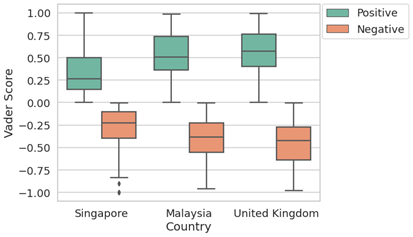

Why Smart Cities?
Cities around the world are growing in size, and the demand
for interdisciplinary knowledge is increasing. It is essential
to have the necessary skills to bridge the gaps between
industries in order to innovate smart-city solutions, that can benefit society in terms of its people, businesses and environment. Feel free to take a look at some of my projects below.
Measuring Healthcare Accessibility
in California using the Gravity Model

Geographical Information Systems (GIS) has developed greatly in recent years, with software like ESRI's ArcGIS improving the analysis and visualisation of data using maps. Although there have been many studies to measure aspatial accessibility to healthcare in America, not much has been done in terms of geographical considerations.
Public Sentiment Analysis
on Lab-Grown Meat

In December 2020, Singapore became the first country in the world to legalise lab-grown meat for commercial use. Since this is quite a novelty, not much research has been done to analyse the public sentiments surrounding this affair.
Measuring the Impact of COVID-19 on
Mental Health in Singapore using the BERT Model

Singapore is usually ranked amongst the top in the international indexes — from the world’s highest GDP per capita to life expectancy. Singaporeans have all the reasons to be happy. However, Singaporean are the unhappiest in the world with one of the highest rates of depression in Asia. The already poor mental health state of Singapore is exacerbated by the recent Covid-19 pandemic resulting in a surge in mental health issues since the 2020 Circuit Breaker. This project aimed to assess the emotional well-being of Singaporeans and examine how it has been affected by Covid-19.
FlexiVolunteer
App Design Prototyping
Produced empathy maps and engaged in quick prototyping.
Acquainted with vector graphics editor and prototyping tools to design an app.